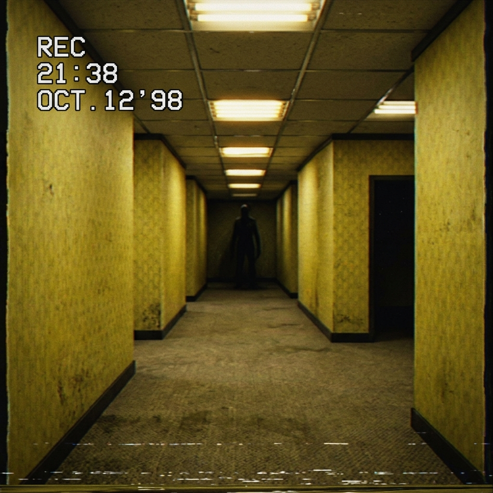

The corridor shifts when you blink. You look back, and the corner you just turned has vanished, replaced by a blank yellow wall. The air is warm and heavy.
In the distance, a shadow is stretched across the linoleum floor. It is too wide to be human. It drags itself along the walls, moving slowly from one intersection to another, accompanied by a wet, sliding sound.
Your eyes start playing tricks on you. The yellow wallpaper seems to ripple, like skin breathing.